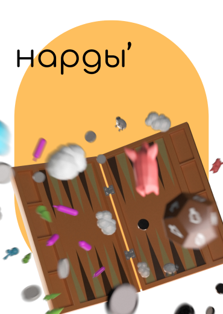

Portfolio
Product task in glasses store
ui/ux
case study
Cards for posts to the culture group

graphic design
Posters for the Animation Festival
graphic design
case study
poster
Digitalize the old paper form
ui/ux
case study
Identity for a photo studio
graphic design
case study
brand design
polygraphy
Computer game “Nardy”
3D
case study
game design
Gallery